Cuộn chuột để khám phá hành trìnhCuộn xuống để khám phá
01
Khảo sát hiện trạng
Bắt đầu bằng việc khảo sát thực tế vị trí khu đất trước khi triển khai thiết kế,
giúp chúng tôi có được cái nhìn khách quan hơn về ngôi nhà trong tương lai, từ đó đưa ra những đề xuất thích hợp
và hài hòa với nhịp sống địa phương.
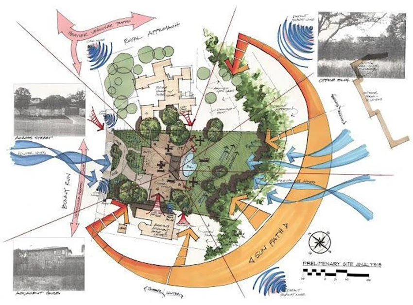
DREAMESE / 01
02
Tư vấn & định hướng
Đây là giai đoạn đối thoại.
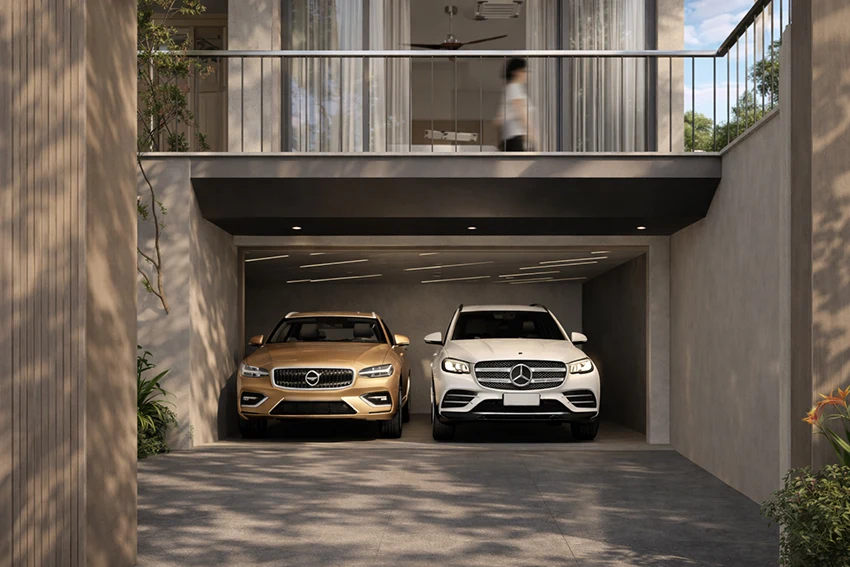
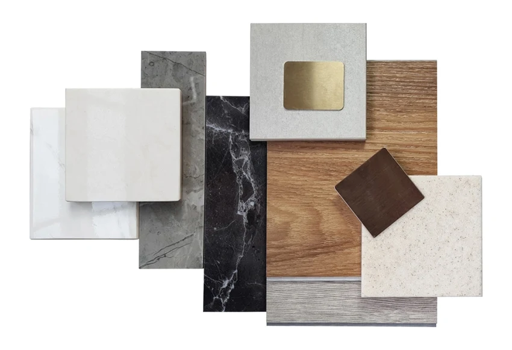
DREAMESE / 02
03
Thiết kế 2D
Trên cơ sở Nhiệm vụ thiết kế đã trình bày và thuyết mình,
Dreamese sẽ thực hiện bố trí mặt bằng công năng đã trao đổi trước đó.
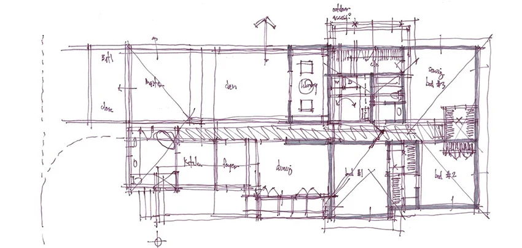
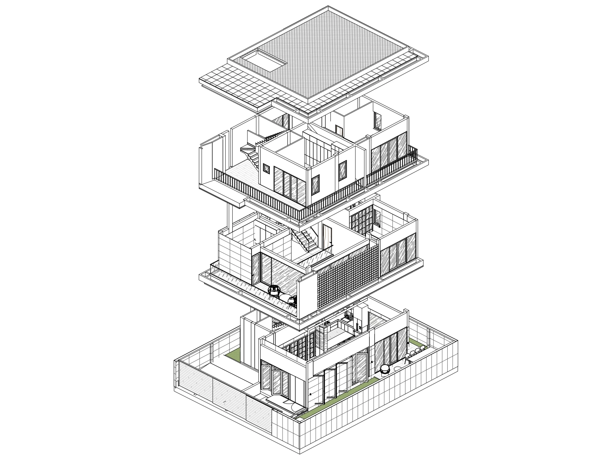
DREAMESE / 03
04
Thiết kế 3D Ngoại thất
Giúp Khách hàng có được cái nhìn tổng thể hơn về ngôi nhà mơ ước trong tương lai.
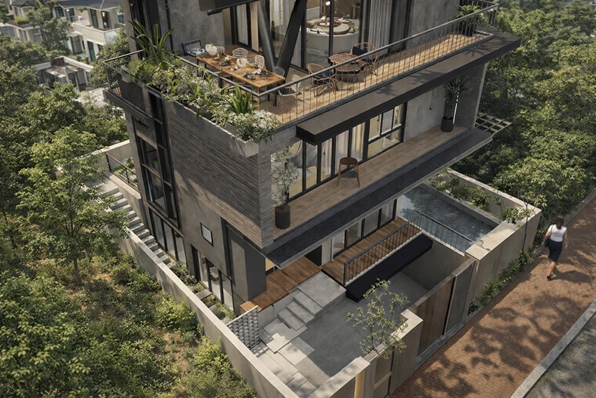
DREAMESE / 04
05
Thiết kế 3D Nội thất
Bên cạnh việc có được cái nhìn tổng quan về đồ dùng vật dụng có trong ngôi nhà của mình,
trong quá trình thuyết minh về không gian thiết kế này, Dreamese kết hợp với trình vật liệu mẫu có trong thiết kế của Không gian Nội thất.
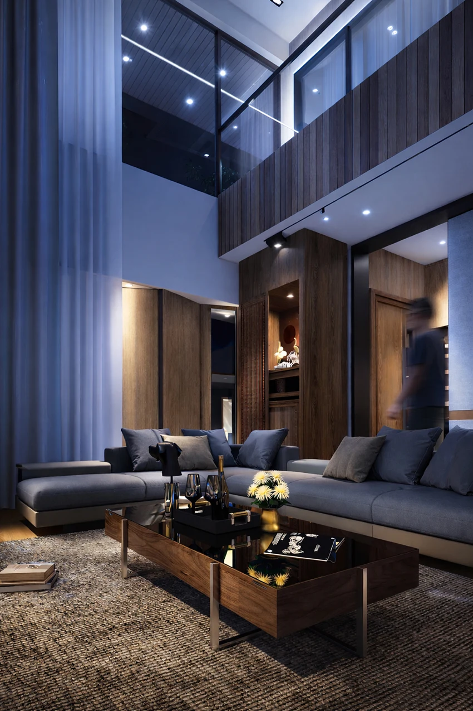
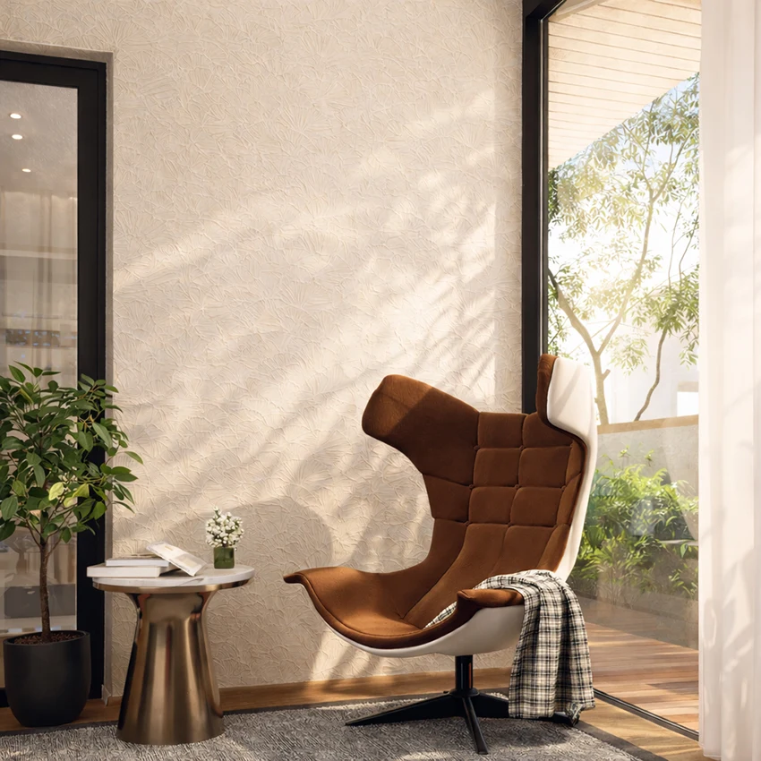
DREAMESE / 05
06
Khai triển HSKT
Đây là giai đoạn có vai trò tiên quyết và mất nhiều thời gian.
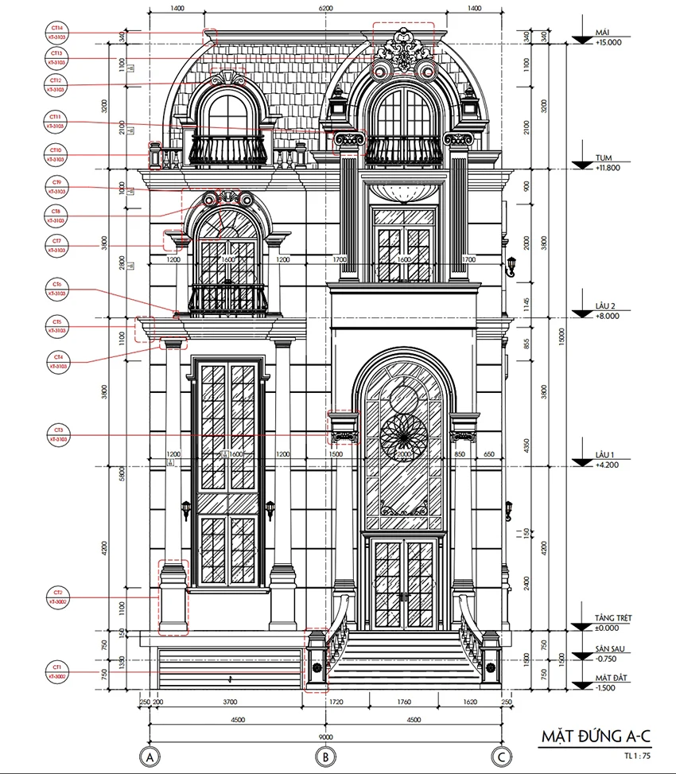
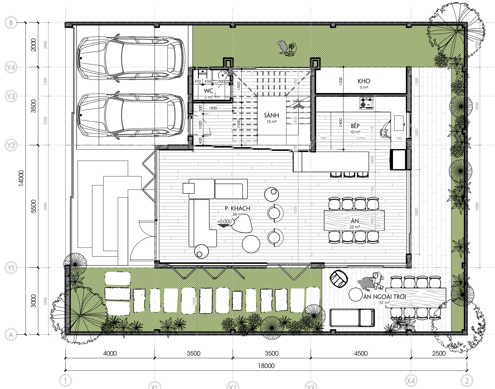
DREAMESE / 06
07
Thuyết minh & bàn giao
Dreames hân hạnh khi đã được đồng cùng quý Khách hàng đồng hành trong suốt quá trình tạo dựng thẩm mỹ vừa qua.
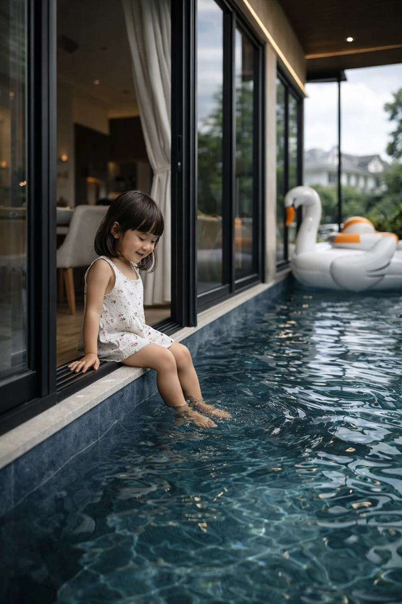
DREAMESE / 07
CHƯƠNG TIẾP THEO
Cùng kể câu chuyện không gian của bạn.
Một cuộc trò chuyện là khởi đầu cho hành trình thiết kế.